Known optimum
Each generated fixture carries a certified V* and π*, making absolute suboptimality measurable instead of hidden.
via Converse Optimality
A benchmark methodology where the environment is shipped with its own certified optimum, enabling RL algorithms to be evaluated by distance to optimality rather than only by relative leaderboard returns.
Core contribution
Standard RL benchmarks rank algorithms by return on tasks whose true optimum is unknown. This paper reverses the workflow: choose a value function and policy, construct environments where they are provably optimal, then use the certified pair as a ground-truth oracle for evaluation.
Each generated fixture carries a certified V* and π*, making absolute suboptimality measurable instead of hidden.
Bellman residual checks verify that the prescribed policy attains zero residual and all other actions are no better.
Results can separate policy error, value error, exploration, optimizer sensitivity, environment variation, and simulator effects.
Methodology
A converse generator creates a family of environments, validates optimality certificates, exports fixtures, and supports either sensitivity benchmarking or oracle-referenced comparison.
Draw continuous-time or native discrete-time systems from a certified converse construction.
Check action minimization, Bellman consistency, and closed-loop boundedness before release.
Agents interact only with the environment dynamics and costs, preserving a standard RL protocol.
Use common random numbers and paired bootstrap intervals for gap, regret, and policy error.
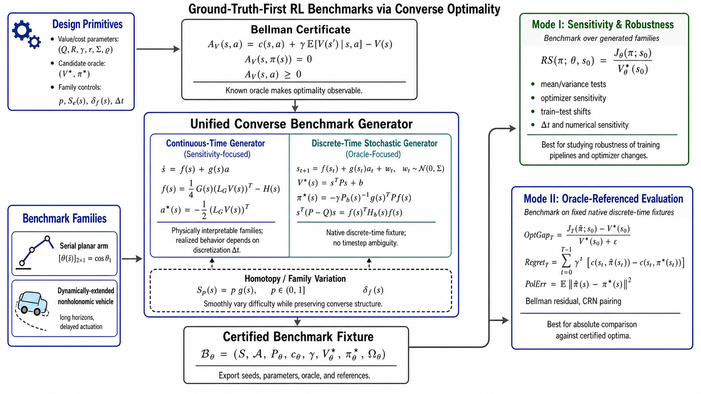
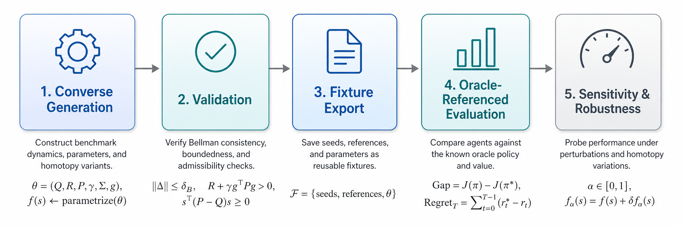
Two complementary modes
Continuous-time converse generators are natural for physically interpretable nonlinear systems and controlled environment variation. They expose whether conclusions change when nearby plants, optimizer choices, or simulator details vary.
Native discrete-time fixtures remove the extra simulator timestep choice. The learner, evaluator, and oracle operate on the same transition law, making absolute optimality metrics intrinsic to the benchmark.
Benchmark systems
Serial Arm and NVDEx are native discrete-time, stochastic, oracle-equipped fixtures. Both expose optimality gap and regret directly, but their dynamics create different failure modes for RL agents.
The serial arm is an n-link planar mechanism with revolute joints. Its state stacks joint angles and angular velocities, while actions are joint torques. Configuration- dependent actuation changes the mechanical advantage as the arm moves, and bounded nonlinear rotations couple neighboring links.
A useful intuition is a crankshaft-and-spring assembly: rotating links transfer energy across joints, while spring-like restoring and coupling effects can create oscillation before a good controller damps it. This makes trajectory, action, and regret deviations easy to diagnose against the oracle.
NVDEx is a unicycle-like nonholonomic vehicle family with dynamic extension. The state includes position, heading, and velocity-chain variables; the action acts at the top of those chains rather than instantaneously on pose. The result is delayed actuation and longer credit-assignment paths.
Because the fixture is defined directly in discrete time, the learner, evaluator, and oracle share the same transition law. The completed NVDEx summary contains 105 runs across algorithms, seeds, vehicle-chain configurations, and difficulty levels.
Empirical evidence
The reproduced results show both sides of the framework: 160 generated continuous-time tasks for optimizer sensitivity, and 225 represented native discrete-time Serial Arm + NVDEx runs for oracle-referenced RL comparison.
In Mode I, 160 unstable 3D continuous-time tasks were split into two PPO optimizer arms (80 Adam and 80 RAdam). This F-test belongs to the sensitivity study only: it is not the Mode II Serial Arm/NVDEx comparison.
Mode II uses native discrete-time fixtures for absolute algorithm comparison. The inspected benchmark material represents 120 Serial Arm runs plus 105 completed NVDEx runs. The paper table reports aggregate algorithm-regime statistics rather than listing every individual run.
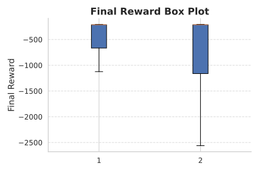
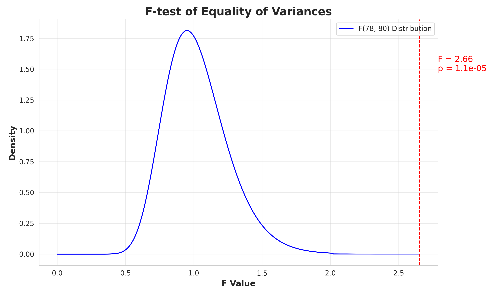
Web summary of the manuscript’s 15 algorithm-regime rows; underlying Mode II material represented here totals 120 Serial Arm + 105 NVDEx runs = 225.
| Experiment | Best OptGap | Best Regret | Interpretation |
|---|---|---|---|
| Serial-random | TD3: −5.85e+01 | TD3: 2.14e+02 | Replay-based coverage helps when initial states span a broader region. |
| Serial-fixed | PPO: −6.46e+01 | PPO: 4.08e+03 | On-policy stability is strongest under a narrower occupancy distribution. |
| NVDEx | PPO: −1.58e+01 | PPO: 2.97e+00 | Long-horizon, delayed-actuation dynamics favor stable constrained updates. |
Visual diagnostics
The available figures compare uncontrolled behavior, the certified optimum, and representative learned policies. Use the selector to inspect trajectory animations and diagnostic panels.
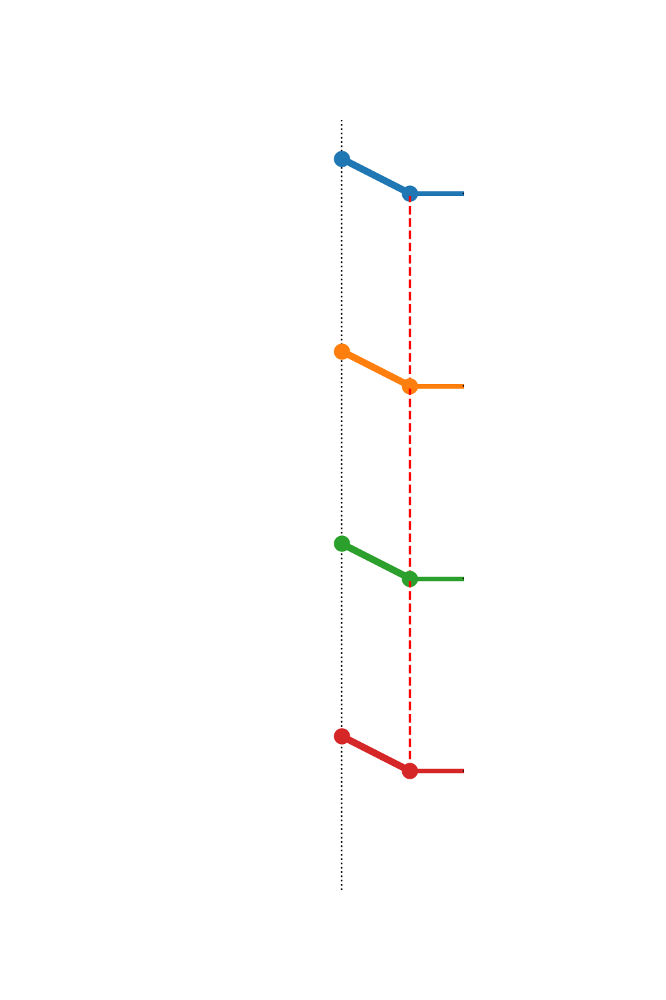
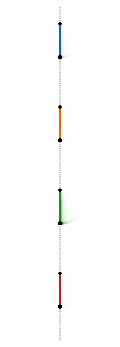
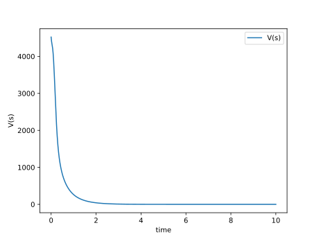
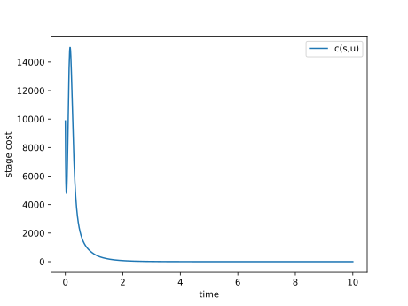
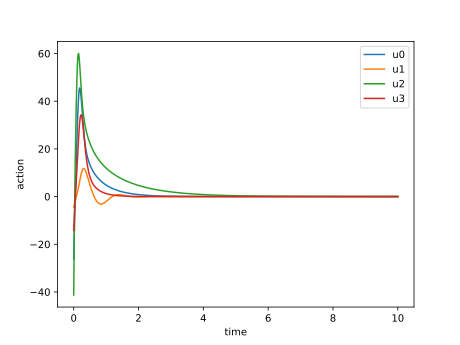
System-level diagnostics
The policy gallery shows one trajectory-level view. The system-level plots below summarize the other visual diagnostic: how far each algorithm remains from the certified oracle across Serial Arm and NVDEx regimes.
In the arm family, broader random starts reward replay-based coverage, while fixed starts favor stable on-policy behavior. Because the optimal value is known, the plots separate “ranking first” from being genuinely close to the crankshaft-like linked-arm oracle.
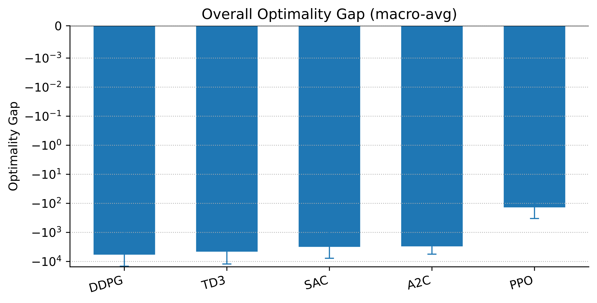
NVDEx emphasizes delayed actuation, long horizons, and stiff closed-loop behavior. Oracle-referenced regret shows whether an algorithm merely stabilizes the vehicle or actually tracks the certified optimal policy closely.
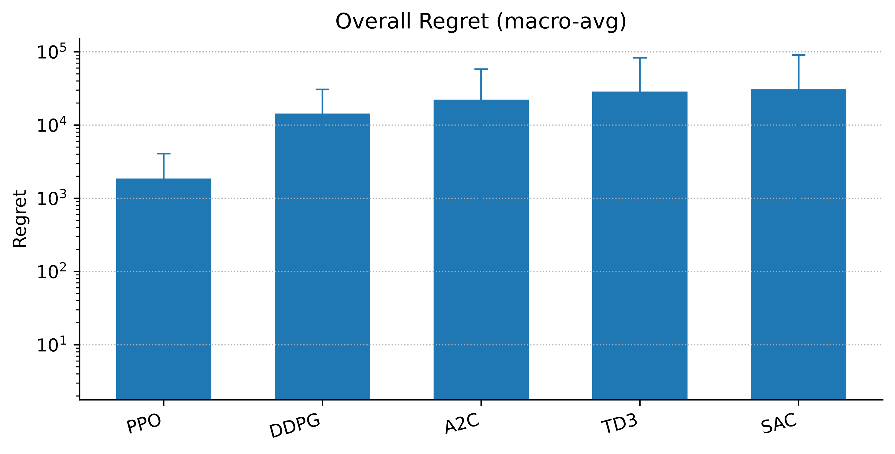
Takeaways
Relative returns are not enough. Without the optimum, rankings cannot tell whether an algorithm is close to optimal or merely less poor than another baseline.
Converse optimality makes ground truth part of the fixture. That enables absolute metrics, paired statistical tests, and environment-family sensitivity studies.
Time formalism matters. Continuous-time generators are excellent for sensitivity and numerical-interface questions; native discrete-time fixtures are best for absolute algorithm comparison.
Resources
Use the links below to read the manuscript and explore the released benchmark/code resources.
@misc{ground_truth_first_rl_benchmarking_2026,
title = {Ground-Truth-First Benchmarking of Reinforcement Learning via Converse Optimality},
author = {Anonymous Author(s)},
note = {Submitted to the 40th Conference on Neural Information Processing Systems (NeurIPS 2026)},
year = {2026}
}